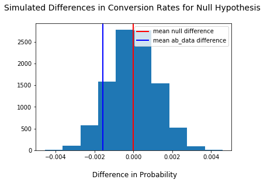

For this project, I implemented an A/B test for an e-commerce website and analyzed the results. The objective was to decide if the company should implement the new landing page or keep the old version. For a detailed view visit the Github repository.
The dataset contained information on each user, time, treatment group, conversion and country. The approach was to assess and clean the dataset and run the A/B test. The test was performed by implementing three different methods. After stating the Null- and Alternative-Hypothesis the methods were implemented:
Tools

Statiscally spoken there is no evidence for the new landing page to contribute to a higher conversion rate. With p-value higher than 0.05 we have no reason to reject the null hypothesis and therefore we have to assume that the old landing page leads to the same or better converstion rate than the new one does. Practically this means the company should not roll out the new landing page as their home landing page. With a big sample size like in this case (300000) there is enough testing evidence to confirm this result. Also there is no indicator that the country influences the conversion of the landing page. With this said, the company should focus on developing a new landing page as further tests with a new landing page version could lead to more insights. Also the company could focus on additional information to include for further testing as perhaps other characteristics like time of use could bring more information about why the new landing page did not work as expected and what to improve in the future.